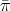
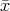
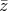
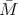
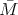
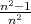

MATP6640/DSES6770 Linear Programming, Homework 3.
Due: Friday, March 2, 2012.
10% penalty for each day late.
The following is a primal-dual pair of linear programs:
Assume (P) and (D) are both feasible. Further, assume the polyhedron Q := {x ≥ 0 : Ax = b} is bounded. Let z denote the optimal value of (P) and (D). For any appropriately dimensioned vector π, define
The function Θ(π) is concave and provides an underestimate of z for any π. The best lower bound is obtained by maximizing Θ(π). This construction is used in Questions 1, 2 and 3.
where G is a matrix, v is a vector, and d is a nonnegative vector. The optimal value of (LD) overestimates the maximum possible value of Θ(π). Assume an optimal solution , for (LD) is known. Let  solve Θ(). Assume > Θ(). Give a valid linear constraint that must be satisfied by π and Θ(π) for all π, and is violated by , .
Let a IRn. Define updated values of M and z as
Assume aT x = aT z and (x-z)T M-1(x-z) = 1. Show that (x- )T -1(x- ) = 1. (Hint: You may assume -1 = (M-1 + βaaT ) for some parameter β. You can find β by solving -1 = I.)
| John Mitchell |
| Amos Eaton 325 |
| x6915. |
| mitchj at rpi dot edu |
| Office hours: Tuesday: 12 noon – 2pm, Wednesday: 2pm – 4pm. |